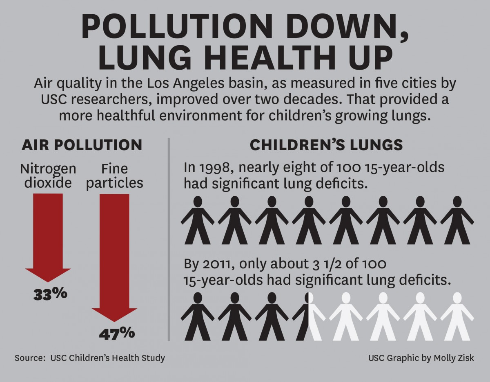

Summary
It will be many, many years before the smog in L.A. can permanently go below the standard limit consistently
even if the MODEL is implemented.
One thing that can expedite the process is further
research on point sources and non-point sources that contribute to photochemical smog and factors
to how long it lingers on the ground-level.
In terms of what has been done already, the Los Angeles has made significant progress with mitigating the
negative
effects of the photochemical smog and general air pollution. For instance, between 1998 and 2011, the rate of
lung
defects in children decreased by over half

Sources Used:
“Protect Yourself and Your Community | State of the Air.” Www.lung.org,
www.lung.org/research/sota/protect-yourself-community.
Dundon, Rian. “Photos: L.A.’S Mid-Century Smog Was so Bad, People Thought It Was a Gas Attack.” Medium, 23
May 2018, timeline.com/la-smog-pollution-4ca4bc0cc95d.
Barboza, Tony. “Los Angeles Suffers Worst Smog in Almost 30 Years.” Los Angeles Times, 10 Sept. 2020,
www.latimes.com/california/story/2020-09-10/los-angeles-had-its-worst-smog-in-26-years-during-heat-wave.
“PHOTOCHEMICAL SMOG: What Is It, Causes and Consequences with VIDEO.” Green-Ecolog.com,
green-ecolog.com/15340679-photochemical-smog-what-is-it-causes-and-consequences
Accessed 16 Dec. 2022.
“LA Environmental Success Story: Cleaner Air, Healthier Kids.” USC News, 14 Jan. 2016,
news.usc.edu/76761/las-environmental-success-story-cleaner-air-healthier-kids/.